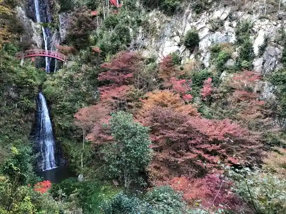

Go Takara Taki
Yaotsu, Gifu · 0574-43-2111 · Official / source link
Gifu Banjii
Yaotsu, Gifu · Official / source link
Jindo no Oka Park
Yaotsu, Gifu · Official / source link
Sugihara Chiune Memorial Museum
Yaotsu, Gifu · 0574-43-2460 · Official / source link
Go Takara Taki no Autumn Leaves
Yaotsu, Gifu · 0574-43-2111 · Official / source link

Shionami Yama no Chokubai Tokoro (Yaotsu)
Yaotsu, Gifu · 0574-42-1355 · Official / source link
Furendorii Park Ohira
Yaotsu, Gifu · Official / source link
Mei So Forest
Yaotsu, Gifu · 0574-43-2111 · Official / source link
Mei So Forest no Autumn Leaves
Yaotsu, Gifu · 0574-43-2111 · Official / source link
Kamishiro Ta Tanada (Nippon no Tanada Hyakusen Yaotsu)
Yaotsu, Gifu · Official / source link
Ken Gyo Yama Tozando
Yaotsu, Gifu · 0574-43-2111 · Official / source link
Yaotsu B&G Kaiyo Center Teiko (So Mizu Park)
Yaotsu, Gifu · 0574-43-2111 · Official / source link
Kuramoto Yamada (Goshigaisha Yamada Shoten)
Yaotsu, Gifu · 0574-43-0015 · Official / source link
Kirin Kiso Kawamizu Gen Forest (Yaotsu Sasa Ike)
Yaotsu, Gifu · Official / source link
Sabaibarugemufiirudo
Yaotsu, Gifu · 0574-42-1201 · Official / source link
Kyu Yaotsu Hatsudensho Museum
Yaotsu, Gifu · Official / source link
Shio Minami Marettogorufu Ba
Yaotsu, Gifu · 0574-42-1414 · Official / source link